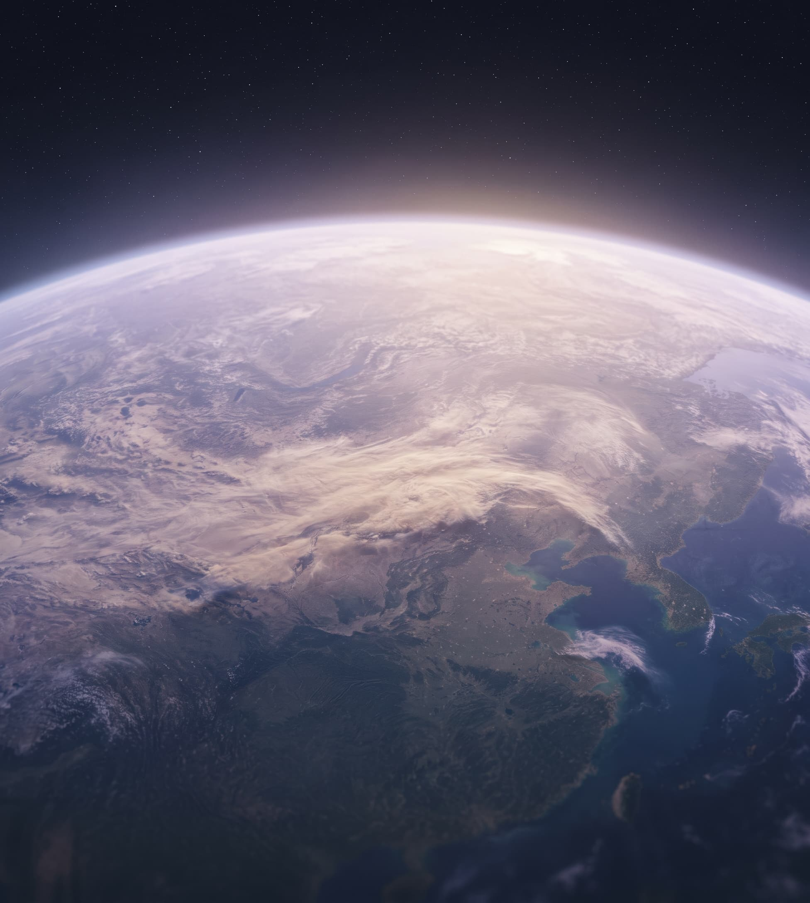
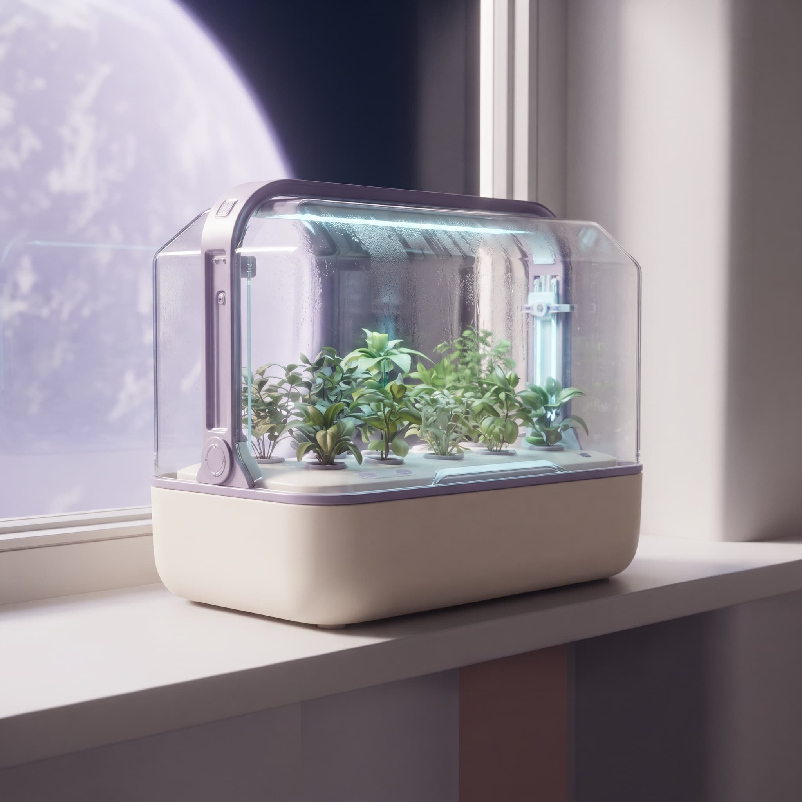

Distance is a design problem.
A different planet should not mean feeling far away. We make it easier to travel, stay in touch and share everyday moments.
Beyond the familiar.
Our purpose / A shared horizon
Nova Orbit makes useful, thoughtful technology for everyday life beyond Earth.
A call with family. Fresh herbs in the kitchen. A suit for the way to work. We believe life in space should feel as comfortable and familiar as life on Earth.

What keeps us in orbit
A different planet should not mean feeling far away. We make it easier to travel, stay in touch and share everyday moments.
Getting dressed, making a call or heading out should feel simple. We build familiar controls into products made for unfamiliar places.
Precision and beauty belong together. Every material, every curve and every interaction earns its place.
The things we make work better together. From a personal device to an orbital home, connection belongs in every part of your day.

TERRA BLOOM / A little Earth at home
Designed from the inside out
Automatic watering. Light when your plants need it. A compact design that belongs beside your kitchen window. Terra Bloom takes care of the details, so you can enjoy the growing.
A conversation beyond boundaries
Choosing a product, settling into a new home or just curious? We'd love to hear from you.
Here to help
Earth / 44.9° N, 93.2° W
Terra optical uplink array
For product questions, everyday ideas and a little help getting started.